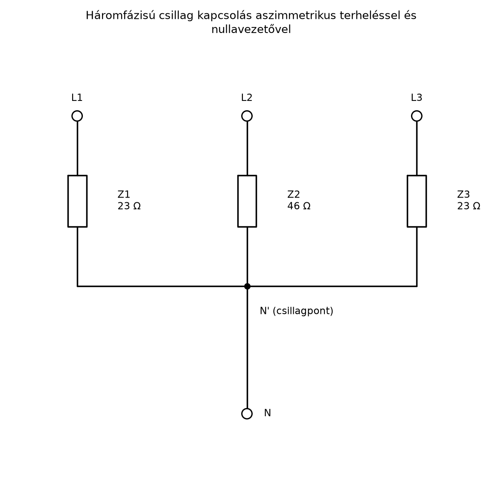
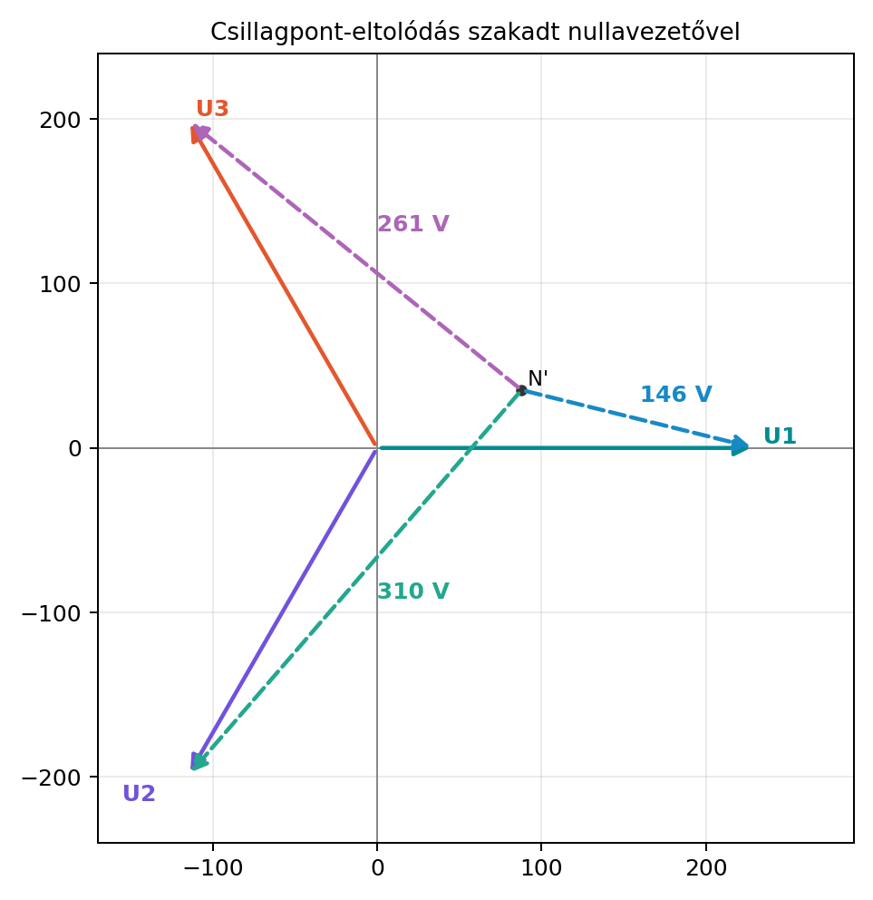

Egy lakásfelújítás során a villanyszerelőnek el kell döntenie, hogy az egyfázisú fogyasztókat – világítási köröket, aljzatköröket, klímát, mosógépet – hogyan ossza el a három fázis között. Ha mindent egy fázisra köt, az a fázis túlterhelődik, a nullavezetőben áram folyik, és a feszültség eloszlása egyenetlen lesz. Ha pedig a nullavezető valahol megszakad, a fogyasztókon túlfeszültség vagy alacsony feszültség jelenhet meg, ami tönkreteheti az érzékeny készülékeket. Ezért ebben az alfejezetben a háromfázisú teljesítmény kiszámítását, az aszimmetrikus terhelés hatását és a nullavezető szerepét tanuljuk meg. Az áramkörök fázisok közötti kiosztásának szabályait a Lakás- és épületelosztó felépítése alfejezet adja.
Az alábbi kapcsolási rajz három fázist és egy nullavezetőt mutat, amelyre három különböző impedanciájú egyfázisú fogyasztó van kötve csillagkapcsolásban. A fogyasztók impedanciája eltérő, ezért a fázisáramok nem egyenlők, és a nullavezetőben áram folyik.

A rajzon , , a három fázisvezetőt jelöli; , , a csillagpontba kötött egyfázisú (ohmos) fogyasztókat, amelyek -on , és áramot vesznek fel; a nullavezetőt. A csillagpontot () a nullavezetőre kötjük. Ha a fogyasztók azonosak, a csillagpont árama nulla; ha különböznek, a nullavezetőben áram folyik.
Definíció. Szimmetrikus háromfázisú terhelésről akkor beszélünk, ha mindhárom fázisban az impedancia nagysága és fázisszöge azonos. Ekkor a fázisáramok azonos nagyságúak, és egymáshoz képest -kal eltoltak.
Definíció. Aszimmetrikus terhelésnél legalább az egyik fázis impedanciája eltér a többitől, így a fázisáramok nem egyenlők, és a nullavezetőben áram folyik.
Összefüggés. Háromfázisú hatásos teljesítmény szimmetrikus terhelésnél:
ahol: - a vonali feszültség effektív értéke (), - a vonali áram effektív értéke, - a fogyasztó teljesítménytényezője.
Összefüggés. Háromfázisú látszólagos és meddő teljesítmény:
A teljesítményekre ugyanaz a derékszögű háromszög érvényes, mint egyfázisban:
Definíció. A nullavezető árama a három fázisáram vektoros (fázor) összege:
Szimmetrikus terhelésnél ez pontosan nulla, mert a három azonos nagyságú, egymástól -kal eltolt fázor összege zérus.
A háromfázisú rendszer valójában három egyfázisú áramkörből áll. Mindegyik fázisban a hatásos teljesítmény:
Csillagkapcsolásban a fázisfeszültség , a fázisáram pedig megegyezik a vonali árammal: . Ezért a három fázis együttes teljesítménye:
Deltakapcsolásban a fázisfeszültség megegyezik a vonalival (), a fázisáram pedig . Behelyettesítve:
Látható, hogy csillag és delta kapcsolás esetén ugyanazt a képletet kapjuk a vonali mennyiségekkel. Ez az oka annak, hogy a háromfázisú teljesítményt szimmetrikus terhelésnél alakban számoljuk.
Összefüggés. Aszimmetrikus terhelésnél a képlet nem érvényes; a teljesítményt fázisonként kell összegezni:
Például tisztán ohmos terhelésnél, fázisfeszültségnél és , , fázisáramnál: .
Összefüggés. A motor adattábláján a tengelyen leadott teljesítmény áll: , tehát .
A nullavezető szerepe az, hogy a csillagpontot a fogyasztói oldalon is a hálózat csillagpontjával azonos potenciálon tartsa. Ha a nullavezető megszakad, a fogyasztói csillagpont potenciálja eltolódik: nem marad a három fázisfeszültség közös nulla pontjában, hanem a fogyasztók impedanciáinak arányában elmozdul.
Figyelem. A valóságban a fogyasztók nem mindig tiszta ellenállások, és más fogyasztók is párhuzamosan kapcsolódnak, de a jelenség ugyanaz: a nullavezető szakadása aszimmetrikus terhelésnél veszélyes feszültség-eltolódást okoz. TN-C (PEN) szakaszon a szakadás a készülékek testét is feszültség alá helyezheti; ezt az Alapvédelem, hibavédelem, kiegészítő védelem és a Hálózati rendszerek: TN-C, TN-S, TN-C-S, TT, IT alfejezet tárgyalja.
Ha mindhárom fázis terhelt, a nullaszakadás már nem egyszerű soros feszültségosztó: a fogyasztói csillagpont () a terhelések arányában eltolódik. A csillagpont-eltolódás (Millman-tétel):
Ohmos terhelésnél ; a terheletlen fázis tagja () kiesik. A fázorokat komponensenként (vízszintes; függőleges) adjuk össze.

Következmény. A legkisebb teljesítményű (legnagyobb ellenállású) fogyasztó kapja a legnagyobb feszültséget (, kb. 35 %-kal a névleges felett), a nagy fogyasztó feszültsége pedig -ra esik. Ellenőrzés: bármely két fogyasztói fázisfeszültség fázorkülönbsége továbbra is a vonali feszültség (kb. ), mert a hálózati oldal nem változott. Keresztellenőrzés a kétfázisú példával: , , terheletlen L3 esetén a képlet kb. -ot és -ot ad (a kétfázisú példa a kerekített -tal / -ot) – egyezik. A lenti „Valós életbeli alkalmazás” mérési képe is ezzel a képlettel magyarázható. ∎
A másik gyakori háromfázisú hiba, hogy egy fázisvezető megszakad (kiolvadt biztosító, laza ér). Vegyük a fűtőbetétes vízmelegítőt: három, egyenként -os betét, ép állapotban csillagban , deltában (elvi összehasonlításként, -os betétfeszültség mellett) .
| Kapcsolás, egy fázis kiesett | A betéteken | Teljesítmény | Az ép érték része |
|---|---|---|---|
| csillag nullavezetővel | egy 0 V, kettő 230 V | 2/3 | |
| csillag nullavezető nélkül | egy 0 V, kettő sorosan 400 V-on, egyenként 200 V | 1/2 | |
| delta | egy 400 V, kettő sorosan, egyenként 200 V | 1/2 |
Háromfázisú motornál nem egyszerűen a teljesítmény feleződik: álló motor nem indul el (búg), a forgó motor tovább foroghat, de a megmaradt vezetékekben túláramot vesz fel és túlmelegszik; ezt a motorvédelem kezeli (Motorvédő kapcsoló, hőkioldó, megszakító és szakaszoló). Ha a fázishiányt a motorleágazás vezérlőkörének kell érzékelnie, fázisfigyelő relé bontja a mágneskapcsoló tekercskörét; a relék működését a Mágneskapcsolók és relék alfejezet, a bekötést ugyanaz a motorvédelmi alfejezet (31.3) mutatja.
| Tünet | Mérés (lakatfogó, nullavezető nélküli bekötés) | Valószínű ok |
|---|---|---|
| a vízmelegítő lassan melegít | két fázisvezetőben kb. (), a harmadikban 0 A | fázishiány a készülék előtt (vagy a harmadik ér, kötés szakadása) |
A modern fogyasztók (kapcsolóüzemű tápegységek, LED-lámpák, frekvenciaváltók) nem szinuszosan veszik fel az áramot, ezért a fázisáramok felharmonikusokat tartalmaznak. A 3. harmonikus és annak páratlan többszörösei (3., 9., 15. stb.) a három fázisban azonos fázisúak, így a nullavezetőben nem kioltják, hanem összeadják egymást. Ezért a nullavezetőben a harmadik harmonikus áram akár a fázisáramoknál is nagyobb lehet.
Ez a jelenség indokolja, hogy bizonyos esetekben a nullavezetőt vastagabbra méretezik, vagy minden fázishoz külön nullavezetőt alkalmaznak. A harmonikusok részletes vizsgálata meghaladja ennek az alfejezetnek a kereteit, de a jelenséget a gyakorlatban figyelembe kell venni.
Szabvány. A kisfeszültségű villamos berendezések létesítésére vonatkozó MSZ HD 60364 sorozat előírja, hogy a nullavezető áramkörét a fázisvezetőkkel azonos módon kell védeni a túláram ellen, kivéve, ha a nullavezető keresztmetszete legalább akkora, mint a fázisvezetőké, és a nullavezetőben nem folyhat a fázisáramoknál nagyobb áram. A nullavezetőben tilos olyan egypólusú kapcsolót vagy biztosítékot beépíteni, amely a nullavezetőt önmagában megszakíthatja, mert ez nullavezető-szakadást okozhat. Ha a nullavezetőt kapcsolni kell, a kapcsolónak minden pólust egyszerre kell lekapcsolnia. (ellenőrizendő: a pontos szabványszakaszok az aktuális kiadás alapján.)
Továbbvitt eredmény. A nullavezető áramának és a nullavezető-szakadás következményeinek ismeretét használjuk a Fázissorrend, forgó mező és feszültségesés a vezetékben alfejezetben a fázissorrend ellenőrzéséhez, a Teljesítmény- és energiamérés, fogyasztásmérők alfejezetben a háromfázisú fogyasztásmérésnél, az Áram-védőkapcsoló (FI) és kiegészítő védelem alfejezetben a nullavezető hibáinak védelmi vonatkozásaiban, és az Ipari elosztóhálózatok jellemzői és topológiája alfejezetben a terheléselosztás tervezésénél.
Tünet. Egy lakásban a LED-lámpák időnként villognak, a hűtőgép kompresszora nem indul el, és a konnektorokban mért feszültség sem a szokásos 230 V. A lakó azt tapasztalja, hogy egyes készülékek túlmelegednek.
Hipotézis. A tünetek alapján felmerül a nullavezető megszakadásának vagy rossz csatlakozásának gyanúja.
Mérés. A szerelő multiméterrel megméri a fázis-nulla feszültségeket a lakáselosztóban:
Az ilyen kép a csillagpont-eltolódás képletével számolható: a nagy terhelésű fázis feszültsége csökken, a kis terhelésűé nő.
Mindhárom fázis–nulla feszültség eltér a 230 V-tól (a három érték egy szimmetrikus 400 V-os rendszer eltolódott csillagpontjához tartozhat), a vonali feszültségek viszont 400 V körül maradnak: ez a nullavezető-szakadás jellegzetes képe. Érdemes a vonali feszültségeket is megmérni (kizárja a betáplálási hibát). Ez a mérési kép jellemző arra, hogy a nullavezető nem a hálózat csillagpontján van, hanem eltolódott. A szerelő ellenőrzi a nullavezető folytonosságát a mérőhely és a lakáselosztó között. A mérés szakadást mutat.
Ok. A régi csatlakozóban a nulla sorkapocs meglazult, a melegedés hatására oxidálódott, majd a vezető teljesen megszakadt. A nullavezető szakadása miatt a fázisfeszültségek eltolódtak, és az egyik fázison túlfeszültség, a másikon alacsony feszültség lépett fel.
Javítás. A nullavezetőt újra kell kötni, a sorkapcsot ki kell cserélni, és minden csatlakozót nyomatékra kell húzni. Ezen kívül a fogyasztókat célszerű egyenletesebben elosztani a három fázis között, hogy a jövőbeni aszimmetria kisebb legyen.
Megelőzés. Rendszeres időközönként ellenőrizni kell a csatlakozók meghúzását, és kerülni kell a nullavezetőre kötött egypólusú kapcsolókat vagy biztosítékokat.
Biztonsági korlát. A fenti hibakeresés során a feszültség alatti mérést csak jogosult személy végezheti, megfelelő mérési kategóriájú műszerrel. Tanuló ezt a gyakorlatot tanműhelyben, oktató felügyeletével végezheti.
A laza nullakötés egyik gyakori helye a hordozható háromfázisú gépek csatlakozója. Az alábbi képsor egy ötpólusú CEE-dugó szakszerű szerelését mutatja új, még be nem kötött, feszültségmentes kábelen: 1. a dugó részei (tömszelence-anya, tömítőbetét, ház, húzásmentesítő, érintkezőbetét); 2. csupaszolás – a PE-ér hosszabb, hogy húzáskor utolsóként feszüljön, a finomhuzalos erekre érvéghüvely kerül; 3. bekötés a betét kapocsjele szerint (L1 barna, L2 fekete, L3 szürke, N kék, PE zöld-sárga), minden csavar – a nulláé is – gyártói nyomatékkal; 4. összeszerelés, a húzásmentesítő a köpenyt szorítja, majd húzópróba és feszültségmentes folytonosságvizsgálat.
Az ötödik panel két tipikus hibát mutat: ha a köpeny túl rövid, a húzásmentesítő az ereket szorítja, és a kábel rángatásakor a kapcsok lazulnak; a laza N-kapocs terhelés alatt melegszik, oxidálódik, és végül éppen a fent leírt nulla-szakadást okozza. A kábeltípus (pl. H07RN-F 5G2,5), a csupaszolási hossz és a nyomaték példa, illetve gyártói adat. A HTML-kiadásban a lépések lejátszhatók.
Nullavezetőbe biztosítékot vagy egypólusú kapcsolót szerelnek. Ha az kiolvad vagy lekapcsol, a nullavezető megszakad, és túlfeszültség jelenhet meg a fogyasztókon. Helyesen a nullavezetőt csak minden pólussal együtt lehet kapcsolni, vagy egyáltalán nem.
Minden egyfázisú fogyasztót egy fázisra kötnek. Ez aszimmetrikus terhelést és nullavezető áramot okoz, a fázis túlterhelődik, a feszültségesés megnő. A fogyasztókat közel egyenletesen kell elosztani a három fázis között.
A nullavezetőt indokolatlanul csökkentik. Egyfázisú körben és kis keresztmetszeteknél a nullavezető a fázisvezetővel azonos. Többfázisú körben nagyobb keresztmetszetnél (réznél kb. felett) a szabvány feltételekkel megengedi a csökkentést, de csak ha a nullavezető várható árama – a harmonikusokat is beleértve – nem nagyobb a terhelhetőségénél, és a nullavezető túláramvédelme biztosított. Nemlineáris (LED, tápegység, frekvenciaváltó) terhelésnél ez a feltétel jellemzően nem teljesül, ezért ott a nullavezető nem csökkenthető, szükség esetén növelni kell (ellenőrizendő: MSZ HD 60364-5-52, a nullavezető méretezésére vonatkozó szakasz és a keresztmetszet-határok, aktuális kiadás).
A csillagpontot (N) a fogyasztói oldalon összekötik a védővezetővel (PE). TN-C-S rendszerben a szétválasztás után tilos az N és PE összekötése, mert az áram a védővezetőn folyhat, és érintési feszültséget okozhat.
Gyakorlás: ennek az alfejezetnek a kidolgozott példái, gyakorlatai és megoldással ellátott feladatai az Összefoglaló feladatgyűjtemény villanyszerelő tanulóknak című kötet 7.3 szakaszában találhatók.
A háromfázisú rendszerben a hatásos teljesítményt , a látszólagosat , a meddőt képlettel számítjuk. A képlet csillag- és deltakapcsolásra is érvényes, mert a vonali mennyiségekkel fejezzük ki. Szimmetrikus terhelésnél a nullavezető árama nulla, aszimmetrikusnál a három fázisáram fázorösszege. A nullavezető megszakadása aszimmetrikus terhelésnél a csillagpont eltolódását okozza, ami túlfeszültséget vagy alacsony feszültséget hoz létre a fogyasztókon. A 3. harmonikus és páratlan többszörösei a nullavezetőben összeadódnak, ezért harmonikus terhelésnél a nullavezetőt nem szabad alulméretezni (a csökkentett nullavezető csak a szabvány feltételei szerint megengedett; ellenőrizendő). A nullavezetőbe tilos egypólusú kapcsolót vagy biztosítékot beépíteni. A nullavezető-szakadás ismeretét a fázissorrend, a fogyasztásmérés, az áram-védőkapcsoló és az ipari elosztóhálózatok tárgyalásánál is alkalmazzuk.
A fejezet a villamos teljesítmény és a háromfázisú rendszerek alapvető fizikai összefüggéseire épül, amelyek stabil tudásnak tekinthetők. A szabványi hivatkozások (MSZ HD 60364 sorozat) a kiadás előtt ellenőrizendők; konkrét szakaszszámot nem adtam meg. A numerikus példák tanulási célt szolgálnak, nem tervezési előírások.